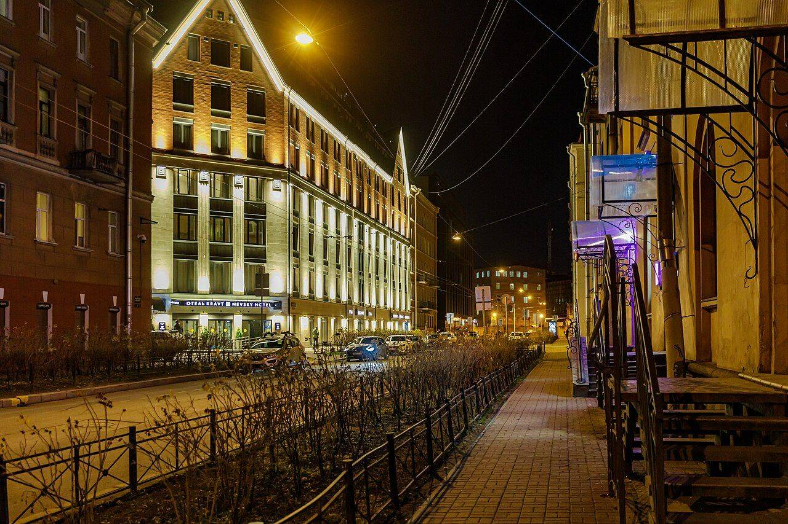
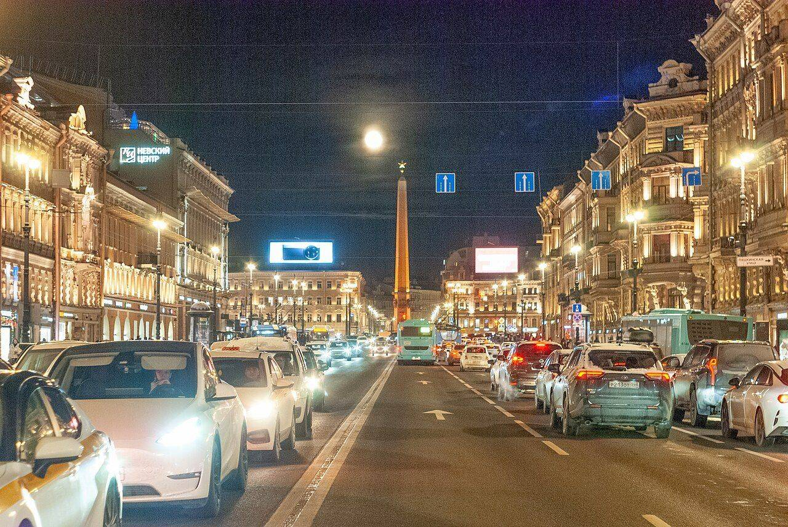
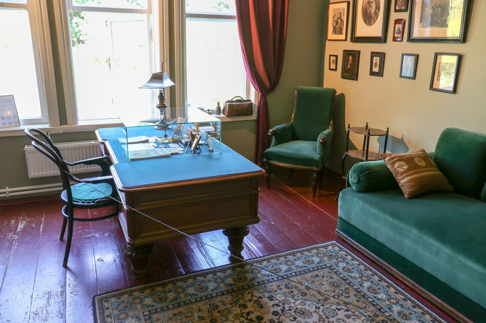

Стаж практики
Более 30 лет нотариальной деятельности в Санкт-Петербургском нотариальном округе.


Нотариальная контора в Санкт-Петербургеул. Казанская, 18 · у Казанского собора · нотариус с 1994 года
Нотариальные действия любой сложности — от доверенности до сделки с недвижимостью — в двух шагах от Невского проспекта, в доме-памятнике архитектуры на Казанской улице.
Контора работает в доме — памятнике архитектуры первой четверти XIX века, у изгиба улицы напротив Казанского собора. Первый адрес Адама Мицкевича в Петербурге.
Приём по предварительной записи, разъяснение правовых последствий и электронная подача в Росреестр — без лишних визитов в МФЦ.
Десять направлений и 74 нотариальных действий. Нажмите на категорию, чтобы увидеть полный список.
Таракановский Леонид Феликсович — нотариус Санкт-Петербургского нотариального округа, осуществляет нотариальную деятельность с 1994 года. Реестровый номер 78/260-н/78, лицензия №268, приказ №273-к от 14.07.1994.
Контора находится по адресу ул. Казанская, 18 — Адмиралтейский район, у Казанского собора. Нотариус и сотрудники конторы разъясняют правовые последствия каждого действия, проверяют документы и помогают выбрать форму сделки, которая защитит ваши интересы.
Нотариус удостоверяет сделки, доверенности и завещания, ведёт наследственные дела, свидетельствует подлинность подписей и верность копий, подаёт документы в Росреестр и ФНС в электронном виде.
Чем силён:

Понятный процесс в пять шагов — от звонка до готового документа.
Позвоните или оставьте заявку на сайте. Уточните услугу и удобное время.
Подготовьте документы по списку, который сообщат при записи. Оригиналы обязательны.
Нотариус разъяснит правовые последствия, проверит документы и личности сторон.
Подписание документа в присутствии нотариуса и совершение удостоверительной надписи.
Вы получаете готовый документ. При необходимости — электронная подача в Росреестр.
Демонстрационное наполнение: тексты отзывов — примеры оформления. Реальные отзывы — на Яндекс.Картах и 2ГИС.
По материалам отзывов на Яндекс.Картах и 2ГИС. Оценка — 4.3 из 5 по 27 отзывам.
Все отзывы на 2ГИС и Яндекс.Картах →Оформляли куплю-продажу квартиры. Нотариус подробно объяснил каждый пункт договора, документы в Росреестр ушли электронно — регистрация прошла за несколько дней.
Делали согласие на выезд ребёнка за границу. Приняли по записи вовремя, всё оформили за двадцать минут, без лишних вопросов.
Открывали наследственное дело. Леонид Феликсович внимательно разобрал ситуацию с долями и подсказал, как лучше поступить. Чувствуется многолетний опыт.
Удобное расположение у Казанского собора, есть оплата картой. В пятницу вечером была очередь — лучше записываться заранее.
Если не нашли ответ — позвоните +7 (812) 315-25-23, подскажем.
Рекомендуем записаться заранее по телефону +7 (812) 315-25-23 или через форму на сайте — так вы не будете ждать в очереди. Часы приёма: 09:00–19:00 в будни, 09:00–18:00 в субботу.
Всегда — паспорт каждого участника. Остальное зависит от действия: для сделки с недвижимостью — правоустанавливающие документы, для доверенности — данные представителя, для наследства — свидетельство о смерти и документы о родстве. Точный список сообщат при записи.
Наличные и банковские карты.
Да, в субботу приём 09:00–18:00. Воскресенье — выходной. Приём документов до 18:30 (сб до 17:30), по предварительной записи.
Да, выезд нотариуса возможен — на дом, в больницу, в офис организации. Время и условия выезда согласуются по телефону +7 (812) 315-25-23.
Да. После удостоверения сделки нотариус направляет документы в Росреестр в электронном виде — без визита в МФЦ и с сокращённым сроком регистрации.
Стоимость складывается из нотариального тарифа, установленного законом, и платы за услуги правового и технического характера, единой для всех нотариусов Санкт-Петербурга. Точную сумму по вашему действию сообщат при записи.
Адрес: ул. Казанская, 18, Адмиралтейский район, у Казанского собора. Метро: Невский проспект / Гостиный двор — 5 минут пешком.
Нотариальное действие совершается на русском языке. Если участник не владеет русским, потребуется переводчик — его участие и данные указываются в документе. Договоритесь об этом заранее при записи.
Нет. Для доверенности достаточно присутствия доверителя с паспортом; о представителе нужны паспортные данные. Представитель получает доверенность позже — лично или через доверителя.
Заполните форму — откроется ваш почтовый клиент с готовым письмом. Или позвоните +7 (812) 315-25-23.
Тексты и документы нотариальной конторы — перенесены дословно.